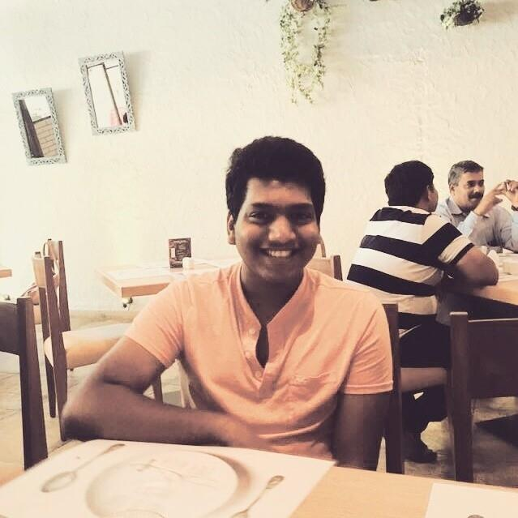

Click to
continue...
KJSCE has been Awarded 'A' Grade by The "NATIONAL ASSESSMENT AND ACCREDITATION COUNCIL" (NAAC) From May 2017. NIRF 2018 Ranked by MHRD. Gold Status in CII Survey 2017.
The K. J. Somaiya College of Engineering (KJSCE) was established in 1983 at Somaiya Vidyavihar, and affiliated with the University of Mumbai. It offers 4 year bachelors degree courses in the departments of Electronics Engineering, Electronics and Telecommunications Engineering, Computer Engineering, Information Technology and Mechanical Engineering. KJSCE is an Autonomous college affiliated to the University of Mumbai spread across approx. 65 acres of posh land and stands among 3 engineering colleges in Mumbai. It is also one of the only 3 autonomous colleges in Mumbai the others being VJTI and SP. It also offers masters course in some these branches.
From Principal's Desk
"Whatever you do in word or in deed, do all in the name of the Lord, giving thanks to Him" –was the ethos of life of our founder late Padma Bhushan Karamshibhai Jethabhai (K. J.) Somaiya. His pioneering efforts and hard work not only revolutionized the sugar industries but his balanced perspective and the social bent of mind enabled him in furthering his dream of shaping young minds through quality education. Shri K. J. Somaiya laid the foundation for Somaiya Vidyavihar Trust in 1959, which then established the K. J. Somaiya College of Engineering (KJSCE) in 1983.
In pursuit of commitment towards Quality in Technical Education, KJSCE had its first accreditation by the National Board of Accreditation (NBA), New Delhi way back in 1998 which subsequently was then reaccredited a couple of more times. During the last accreditation held in 2013, all the 5 UG programmes were provisionally accredited for 2 years (upto 2015). KJSCE has been Awarded 'A' Grade by The "NATIONAL ASSESSMENT AND ACCREDITATION COUNCIL" (NAAC) From May 2017.
Till today, KJSCE is the only Self-financed (Private) Engineering College affiliated to University of Mumbai which has been conferred Autonomous Status in the year academic 2014-15. Students admitted in this year are governed by the new scheme / curriculums designed under autonomy and are eligible to get a B. Tech & M. Tech degree after completion of their course of enrolment.
The flexibility in the academic calendar by way of autonomy, however, was made available to all those students who were a part of the College during the academic year 2014-15. This made it possible for them to plan their activities beyond college engagements; to pursue hobbies, interests, explore career options, take up interesting internships etc. which otherwise was lying beyond the ambit of technology education. They now could learn courses which could help them in strengthening their careers, make them globally competent, etc.
As a part of the continuous evaluation in each course, a variety of tools and techniques are now adopted to evaluate understanding and knowledge of a student. Necessary feedback is given to a student by making the evaluation and assessment fully transparent. The students are encouraged to discuss and understand their shortcomings which in turn helps them in becoming professional engineers of tomorrow.
Understanding the fact that lessons in engineering cannot be confined to only classroom teaching, the education in our College has always tried to reach beyond the curriculum. Not only our students are supported to participate in technology driven projects at national as well as international level to achieve a global outlook, entrepreneurial approach through innovative ideas is given a lot of encouragement. A large number of students are inspired for participating in activities which relate to the issues and needs of society. All these efforts of the College work towards making the graduating student a responsible member of society.
Thus, with the backing of a progressive management, requisite infrastructure, committed staff and versatile students, it is not a surprise to see that KJSCE is one of the most sought after colleges in the University of Mumbai!!"
Principal
Dr. Shubha Pandit
Project Guide
"Prof. Sheetal pereira has been working as a Professor in the department of Computer Engineering in Somaiya Engineering College since 26th July January 2006. She has completed her M.E (Computer Engineering) from K.J.Somaiya College of Engineering, Vidyavihar.
She has taught a variety of subjects like Advanced Microprocessors, Computer Organization and Architecture, Computer Programming I, Computer Programming II, Computer Graphics, Discrete Structures, System Programming, Web Engineering, Analysis of Algorithms, Web Technology, Data Structures. Till date, she has attended many conferences and seminars as well as actively participated in different international publications.
Therfore, we would owe our deep gratitude to our project guide for taking a keen interest in our project and guiding us all along by providing all the necessary information for developing a good system."
Project Developers
 Sahil Maniar |
Pooja Pache |
Aditya Ladage |
| Address: Vidyanagar, Vidya Vihar East, Ghatkopar East, Mumbai, Maharashtra 400077. |